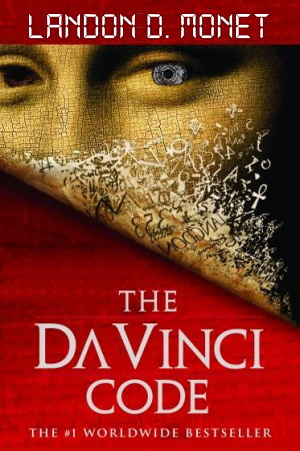

Salut, mes amis! Welcome back to what is swiftly becoming the highlight of my week - Page Turners! This week, we are reviewing a strange one, but one I was informed in passing by a kind stranger as "a literary masterpiece, start to finish" - The Da Vinci Code, originally by Dan Brown and rewritten by critically acclaimed author, Landon D. Monet. Which, as we have stated previously on Page Turners, I am convinced is a pseudonym. No one's parents are that clever.
This is, by far, one of the most dull books we've read for the blog. Now, don't get me wrong - I love a bad book. And, I mean I love them. The worse they are, the better the blog entry! Plus, who doesn't love to read something and say to themselves, "Well surely I could do better!" But this? This is the literary equivalent of a hangover.
Monet thrives when the story features a heavy focus on character. Not on action, mystery nor plot. Their work on a previous title we reviewed, Hearts in Stereo, was one of my favourite modern works I've read. The plot involved no intricacies, no leaps of logic, no obvious puzzles. It was simply two individuals, connected through life by a phenomena no one else could sense. That is peak Monet. This is... Well, it's fine, I suppose. It's serviceable. And, having read the original pre-Page Turners, I can say that Monet brings a flair and charm that Brown had missed in the original writing.
Enough griping - onto the...
First, the strengths. Despite the gripes I immediately had post-reading, there are plenty of things to like in this book. For one, while I do still believe it is not their strongest point, the mystery element of this novel does suit the original source material, and Monet does as best as they can with it. It's nothing special, but it isn't detrimental to the story. As such, it isn't a detriment and belongs here.
Also a strength (as always with Monet) - the characters. I am loath to say it, especially despite my harsh criticism of the book, but I will. I am, irrevocably, enthralled by the character of Robert Langdon. What was once an idealistic version of a bland author has now become one of the most interesting, flawed, broken men in recent literature. I imagine that Monet might have had a person in mind when writing this novel - perhaps, like Brown, they drew from themselves. If so, they are a far more interesting individual than he ever was. Likewise, the majority of the side characters were also more interesting. Aringarosa, Sandrine Bieil and Fache are all more flawed, more deep, more real. It just goes to show that, with the right author, even the unreadable can be tolerable.
Unfortunately, tolerable is all I can give this book. While I stayed for Langdon's sardonic wit and clever deductions, I could not get past the fact that the source material was naught but a steaming pile. And no amount of polishing will find the diamond within. It may be callous of me, but it's true - Dan Brown's writing was shallow and self-serving. And while some author may have made a better book than Monet has here, I would be hard pressed to tell you exactly who that author would be.
Yikes, there's so much to talk about. I won't elaborate, to save your eyes. Here is a brief list of what I disliked in this novel:
This book is dull. That's all to be said about it. It's not a fun read, one way or the other. I wish it was - I wish I could tell you I found this book to be brilliant, or so bad it's enjoyable. But, I did not. That is the sad truth here. This book will mar the legacy of one of the premiere authors of our time for many. For many reasons, but mainly that, I wish anyone but Landon D. Monet wrote this remake.
I am giving this book a score of:
Je suis JLD. I have long enjoyed literature, from classics to modern stories. I have recently taken up reading more and more in my spare time, as some friends of mine are now also reading more frequently. This is mostly an excuse to read what they are reading, but I will post my thoughts here! I will attempt to post spoiler-free, short reviews. I enjoy stories that have a human connection - friendships, relationships, business partners, rivals, enemies. You name it, I love it. If you also love stories such as these, you will enjoy this blog. If not, I hope you stick around regardless! Profitez bien mes chéris!